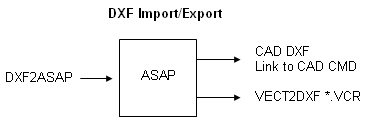

ASAP lite includes a bidirectional DXF/CAD (digital exchange
format/computer-aided design) conversion
up to DXF version 12. The DXF2ASAP utility (vect2dxf.exe) reads an
AutoCAD file (with a DXF extension), converts all surface definitions (and
BLOCKS) into ASAP CURVE-based objects, and writes them to INR and LIB files of
the same name.

Note:
- BRO does not plan to
upgrade its support to current DXF versions due to licensing and royalty
payment requirements by Autodesk. BRO is in favor of the open, and more widely
used, IGES standard. IGES supports true representations of the surfaces created
in the CAD system.
- BRO has extended its IGES
support with its smartIGES(tm) capability. With smartIGES, you can assign
optical properties to "name IGES objects" and IGES remembers these assignments
across IGES import runs. This feature saves time and reduces the risk of errors
due to unaligned properties.